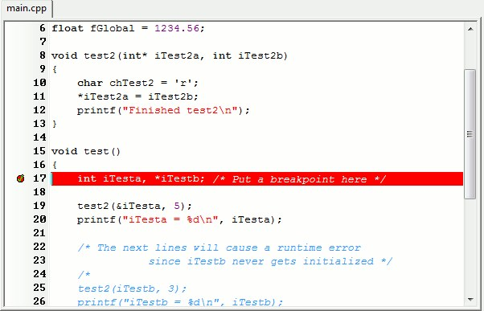

Когда отлаживаешь программу — речь про отладчик в студии или другой IDE — то почти всегда имеешь дело с точками останова (breakpoint, бряками): механизмом, когда выполнение программы приостанавливается, чтобы можно было заглянуть внутрь и понять, что происходит. Точек останова есть всего два основных типа, программные и аппаратные, а остальные все сделаны на их основе. Эти два базовых типа могут вести себя похоже, но устроены по-разному.
Программные точки останова — это то, с чем сталкивается каждый разработчик, когда вы ставите красную точку в среде разработки (в основном я использую большую студию) или используете команду bp под WinDbg. В этом случае отладчик просто подменяет один байт машинного кода в нужной инструкции на команду int 3. Это специальная инструкция для вызова прерывания отладки (Debug Interrupt), имеет машинный код 0xCC и говорит процессору: «Остановись, я хочу передать управление отладчику». Соответственно, когда выполнение доходит до этой инструкции, срабатывает прерывание, и управление передаётся в отладчик. Отладчик «просыпается» и видит, что программа остановилась из-за исключения EXCEPTION_BREAKPOINT, возникшего по конкретному адресу, проверяет свой внутренний список точек останова и находит ту, которая была установлена по этому адресу.
Дальше происходит небольшая магия: чтобы программа могла продолжить работу после остановки, отладчик восстанавливает оригинальный байт, который был заменён на 0xCC, выполняет исходную инструкцию, а потом снова подставляет int 3 на её место. В результате вы можете снова дойти до этой точки останова позже, и она снова сработает. Всё это происходит незаметно для вас — вы просто нажимаете «Продолжить», а отладчик делает всю грязную работу.
Тут возможны два варианта выполнения одной инструкции. Отладчик выполняет её (исходную инструкцию, которая теперь восстановлена), а затем снова записывает 0xCC по адресу точки останова, чтобы она сработала в следующий раз. Или второй вариант — продолжаем выполнение программы: тут отладчик тоже переустанавливает точку останова, но при этом использует специальный механизм процессора (флаг Trap Flag, TF), чтобы выполнить всего одну инструкцию, после чего сразу вернуть 0xCC на место. Это гарантирует, что точка останова останется активной.
Если вы когда-нибудь пробовали посмотреть память или дизассемблировать код в месте, где стоит точка останова, то видели, что команды int 3 там нет. Это происходит из-за того, что отладчику надо показать оригинальные байты, хотя физически в памяти сейчас уже подставлен 0xCC — тем самым сохраняется иллюзия, что код текущего приложения не изменялся.
Преимущества такого способа в том, что его реализация проста и не сильно отличается в любых средах разработки. Программные точки можно ставить где угодно, их может быть сколько угодно, и они не требуют поддержки со стороны процессора. Но есть важное ограничение — это работает только для кода, и таким образом не получится отследить, когда изменяется конкретная переменная или область памяти.
ПАМЯТЬ ДО: ПАМЯТЬ ПОСЛЕ:
┌─────────────────────┐ ┌─────────────────────┐
│ Адрес: 0x00401000 │ │ Адрес: 0x00401000 │
│ │ │ │
│ [48 89 E5] │ ───────> │ [CC 89 E5] │
│ mov rbp, rsp │ Замена │ int 3 (0xCC) │
│ │ первого │ │
│ [48 83 EC 20] │ байта │ [48 83 EC 20] │
│ sub rsp, 0x20 │ │ sub rsp, 0x20 │
└─────────────────────┘ └─────────────────────┘
ОТЛАДЧИК ХРАНИТ ЗНАЧЕНИЯ:
┌──────────────────────────┐
│ BP[0x00401000] = 0x48 | <-- Оригинальный байт
└──────────────────────────┘Тут в игру вступают аппаратные точки останова, и они устроены принципиально иначе — это завязано на возможностях процессора. Процессор умеет следить за определёнными адресами памяти: для этого в архитектуре x86 и x64 есть особые регистры отладки — DR0, DR1, DR2, DR3, а также управляющие DR6 и DR7. Каждый из этих регистров может содержать некий адрес, и процессор будет отслеживать обращения к нему. Как только кто-то читает, записывает или исполняет инструкцию по этому адресу — генерируется особое исключение, и отладчик получает управление. Вместо того чтобы подменять код на лету, мы перекладываем эту работу на процессор.
Таким образом, аппаратные бряки не изменяют код программы и позволяют реагировать не только на исполнение, но и на чтение или запись данных, что бывает полезно, когда надо отловить баги с порчей памяти или сложным поведением для конкретной переменной. В простых случаях можно отследить момент изменения данных и остановить программу, как только кто-то попытается записать что-нибудь по этому адресу.
Неудобства здесь в том, что таких аппаратных точек всего четыре — по числу специальных регистров процессора, и каждая точка умеет отслеживать строго определённый диапазон памяти, выровненный по размеру (1, 2, 4 или 8 байт). Поэтому аппаратные точки не годятся для повседневной работы, но позволяют создавать удобные мини-инструменты в помощь разработчику.
Если вернуться к практике, можно представить, что вы пишете некий компонент, и у вас внезапно оказывается изменена переменная у этого компонента. Программные точки тут оказываются бесполезны, потому что нет понимания, где именно происходит запись. Тут — либо обкладываться логами и «курить сорцы», либо использовать аппаратные бряки, с которыми отладка нужного места решается в один шаг: ставим на адрес переменной бряку, выбираем тип события «на запись», и как только кто-то попытается записать новое значение — отладчик выкинет нас в нужное место.
Большинство отладчиков умеют работать с обоими типами точек, комбинируя их в зависимости от ситуации. Программные используются для обычного кода — чтобы остановиться в функции, сделать пошаговое выполнение, перейти к вызову. Аппаратные применяются для сложных случаев: когда нужно отследить изменение памяти, поймать гонку между потоками, вычислить момент порчи данных.
Аппаратные точки останова — достаточно мощный, но простой в применении инструмент, реализацию которого я рассмотрю чуть ниже. Оба механизма не заменяют друг друга, но позволяют видеть поток исполнения программы более полно и точно понимать, что происходит в каждом случае.
┌─────────────────────────────────────────────────────────────┐
│ SOFTWARE BREAKPOINT │
├─────────────────────────────────────────────────────────────┤
│ Механизм: Замена байта на 0xCC (int 3) │
│ Лимит: Неограничен │
│ Тип: Только на выполнение кода │
│ Скорость: Медленнее (модификация памяти) │
│ Память: Изменяет код программы │
│ │
│ [48] → [CC] → [48] → [CC] (цикл восстановления) │
└─────────────────────────────────────────────────────────────┘
┌─────────────────────────────────────────────────────────────┐
│ HARDWARE BREAKPOINT │
├─────────────────────────────────────────────────────────────┤
│ Механизм: Debug-регистры процессора (DR0-DR7) │
│ Лимит: Максимум 4 одновременно │
│ Тип: Execute / Write / Read+Write │
│ Скорость: Быстрее (аппаратный уровень) │
│ Память: НЕ изменяет код │
│ │
│ DR0 → [Адрес] │
│ DR7 → [Условия срабатывания] │
│ CPU сам отслеживает доступ │
└─────────────────────────────────────────────────────────────┘Расширения к стандартному бряку
Так как отладчик умеет управлять программными точками останова, то на них можно накрутить разные расширения, чтобы сделать жизнь программиста легче.
Conditional Breakpoint (условная точка останова) — срабатывает, когда выполняется заданное условие, например i == 10 или entityName == "Enemy". Удобно, если код вызывается много раз, но нас интересует лишь конкретный случай. Вместо того чтобы вручную нажимать Continue/F5, можно задать условие, и отладчик остановится только тогда, когда оно выполнится. Но, судя по тому, что в VS условные бряки работают медленно, реализовали их не очень хорошо, и часто бывает проще дописать дебажную логику с условием, чем пользоваться реализацией в отладчике.
Hit Count Breakpoint (по счётчику попаданий) — срабатывает не при первом проходе, а после того, как строка была достигнута определённое количество раз. Например, можно задать «остановиться на 100-й итерации цикла». Логически вытекает из предыдущего типа с минимальными изменениями.
Function Breakpoint (на функции) — позволяет остановиться при входе в конкретную функцию, даже если у вас нет исходного кода. Это позволяет работать с библиотеками, SDK или сторонними модулями, где исходники недоступны, но присутствуют символы pdb (обычно их поставляют вместе с SDK либо по запросу). Механизм основан на файле отладочных символов, который содержит таблицу с адресами всех функций и переменных: когда разработчик вводит имя функции в отладчике, например MyNamespace::Player::Update, тот ищет её в этой таблице, находит адрес входа и подменяет первый байт инструкции по обычной схеме. Интересно, что даже при отсутствии PDB-файлов отладчик может поставить такую точку — например, если найдёт нужную функцию в таблице экспортов исполняемого файла или DLL, где хранятся имена экспортируемых функций. Ситуация усложняется при включённых оптимизациях, когда компилятор может встроить функцию прямо в вызывающий код, удалить её как неиспользуемую, переставить её блоки или использовать код функции частично. В таких случаях отладчик может не найти функцию вовсе или установить точку в неожиданном месте — прямо внутри инлайна.
Exception Breakpoint (на исключениях) — срабатывает, когда программа выбрасывает исключение, например деление на ноль, выход за границы массива или любую ошибку, оформленную через throw. В отладчике можно указать, на каких типах исключений нужно останавливаться — только на необработанных или на всех.
Tracepoint (логирование без остановки) — иногда нужно просто узнать, что программа делает в определённый момент, не останавливая выполнение. Для этого есть лог-точки: они выводят сообщение в консоль или окно вывода, не прерывая работу программы.
Temporary breakpoint (временная точка останова) — точка срабатывает только один раз, а затем автоматически удаляется. Подходит для случаев, когда надо проверить конкретный момент, но не хочется вручную убирать точку после срабатывания. В Visual Studio временная точка останова — это не отдельный тип, а поведение, которое получается командой Run to Cursor. Студия под капотом ставит временную точку на текущей строке, запускает программу, и как только выполнение дойдёт до этой строки, отладчик останавливается — после чего бряк автоматически удаляется.
ОТЛАДЧИК: Set breakpoint on "UpdatePlayer"
1: Поиск адреса функции
┌─────────────────────────────────────────┐
│ Ищем в PDB: │
│ "UpdatePlayer" → 0x00401000 │
│ │
│ Если PDB нет, ищем в Export Table: │
│ "UpdatePlayer" → 0x00401050 │
| |
| Ищем в DLL Export Table: |
| GameEngine.dll Export Table: │
│ │
│ ?XBH@UpdatePlayer@@QEAAXVVector3@@@Z │
│ → Адрес: GameEngine.dll + 0x12340 │
│ (mangled name) |
└─────────────────────────────────────────┘
▼
2: Установка software breakpoint
┌─────────────────────────────────────────┐
│ ПАМЯТЬ: │
│ 0x401000: [55] → [CC] │
│ push rbp → int 3 │
│ │
│ СОХРАНИТЬ: │
│ BP_Table["UpdatePlayer"] = { │
│ address: 0x401000, │
│ original_byte: 0x55 │
│ } │
└─────────────────────────────────────────┘Простой интерфейс к своим брякам
Под спойлером — полный код для работы с аппаратными точками останова; давайте разберём особо интересные части.
Код для работы со своими бряками
#pragma warning(push)
#include <Windows.h>
#include <cstddef>
#include <algorithm>
#include <array>
#include <cassert>
#include <bitset>
#pragma warning(pop)
namespace DebugWatchpoint {
// Коды результатов операций с аппаратными точками останова
enum class Status {
OK, // Операция успешна
ContextReadFailed, // Не удалось получить контекст потока
ContextWriteFailed, // Не удалось установить контекст потока
AllRegistersInUse, // Все 4 debug-регистра заняты
InvalidCondition, // Неподдерживаемое условие срабатывания
InvalidSize // Размер должен быть 1, 2, 4 или 8 байт
};
// Условия срабатывания аппаратной точки останова
enum class TriggerCondition {
OnReadWrite, // При чтении или записи
OnWrite, // Только при записи
OnExecute // При выполнении инструкции
};
// Дескриптор установленной аппаратной точки останова
struct WatchpointHandle {
static constexpr WatchpointHandle CreateError(Status err) {
return {0, nullptr, err};
}
uint8_t debugRegIdx; // Индекс использованного debug-регистра (0-3)
void* targetAddr = nullptr; // Адрес памяти, на который установлена точка останова
Status statusCode; // Код результата операции
};
// Функция для безопасного изменения debug-регистров потока
// Получает контекст, выполняет действие, записывает контекст обратно
template<typename ActionFunc, typename ErrorFunc>
auto ModifyDebugContextImpl(ActionFunc action, ErrorFunc onError) {
// Подготавливаем структуру контекста потока
CONTEXT threadCtx{0};
threadCtx.ContextFlags = CONTEXT_DEBUG_REGISTERS;
// Получаем текущий контекст потока с debug-регистрами
if (::GetThreadContext(::GetCurrentThread(), &threadCtx) == FALSE) {
return onError(Status::ContextReadFailed);
}
// Битовые маски для проверки занятости каждого из 4 debug-регистров
// Dr7 содержит флаги включения для каждого регистра
std::array<bool, 4> regInUse{{false, false, false, false}};
auto markIfBusy = [&](std::size_t idx, DWORD64 enableMask) {
// Проверяем бит включения регистра в Dr7
if (threadCtx.Dr7 & enableMask)
regInUse[idx] = true;
};
// Проверяем каждый debug-регистр (DR0-DR3)
markIfBusy(0, 0b00000001); // DR0: бит 0
markIfBusy(1, 0b00000100); // DR1: бит 2
markIfBusy(2, 0b00010000); // DR2: бит 4
markIfBusy(3, 0b01000000); // DR3: бит 6
// Выполняем переданное действие с контекстом
const auto result = action(threadCtx, regInUse);
// Записываем измененный контекст обратно в поток
if (::SetThreadContext(::GetCurrentThread(), &threadCtx) == FALSE) {
return onError(Status::ContextWriteFailed);
}
return result;
}
// Устанавливает аппаратную точку останова на указанный адрес памяти
// targetAddr - адрес для отслеживания
// byteSize - размер отслеживаемой области (1, 2, 4 или 8 байт)
// condition - условие срабатывания (чтение/запись/выполнение)
WatchpointHandle Install(const void* targetAddr, std::uint8_t byteSize, TriggerCondition condition) {
return ModifyDebugContextImpl(
[&](CONTEXT& ctx, const std::array<bool, 4>& regInUse) -> WatchpointHandle {
// Ищем первый свободный debug-регистр
const auto freeReg = std::find(begin(regInUse), end(regInUse), false);
if (freeReg == end(regInUse)) {
// Все 4 регистра заняты (x86/x64 поддерживает максимум 4 аппаратных точки)
return WatchpointHandle::CreateError(Status::AllRegistersInUse);
}
// Вычисляем индекс найденного регистра (0-3)
const auto idx = static_cast<std::uint16_t>(std::distance(begin(regInUse), freeReg));
// Записываем адрес в выбранный debug-регистр (DR0-DR3)
void* addr = const_cast<void*>(targetAddr);
DWORD_PTR addrValue = reinterpret_cast<DWORD_PTR>(addr);
switch (idx) {
case 0: ctx.Dr0 = addrValue; break;
case 1: ctx.Dr1 = addrValue; break;
case 2: ctx.Dr2 = addrValue; break;
case 3: ctx.Dr3 = addrValue; break;
default:
assert(!"Impossible happened - searching in array of 4 got index < 0 or > 3");
return WatchpointHandle::CreateError(Status::AllRegistersInUse);
}
// Работаем с регистром Dr7 через bitset для удобства манипуляции битами
// Dr7 - это control register, содержащий флаги включения и настройки условий
std::bitset<sizeof(ctx.Dr7) * 8> controlReg;
std::memcpy(&controlReg, &ctx.Dr7, sizeof(ctx.Dr7));
// Включаем локальную точку останова для выбранного регистра
// Биты 0,2,4,6 - локальные флаги включения для DR0-DR3 соответственно
// (биты 1,3,5,7 - глобальные флаги, не используются в user-mode)
controlReg.set(idx * 2);
// Устанавливаем тип условия срабатывания в битах 16-31 регистра Dr7
// Каждый регистр занимает 4 бита: биты (16 + idx*4) и (16 + idx*4 + 1)
// определяют условие: 00=Execute, 01=Write, 11=ReadWrite
switch (condition) {
case TriggerCondition::OnReadWrite:
controlReg.set(16 + idx * 4 + 1, true);
controlReg.set(16 + idx * 4, true);
break;
case TriggerCondition::OnWrite:
controlReg.set(16 + idx * 4 + 1, false);
controlReg.set(16 + idx * 4, true);
break;
case TriggerCondition::OnExecute:
controlReg.set(16 + idx * 4 + 1, false);
controlReg.set(16 + idx * 4, false);
break;
default:
return WatchpointHandle::CreateError(Status::InvalidCondition);
}
// Устанавливаем размер отслеживаемой области в битах (16 + idx*4 + 2) и (16 + idx*4 + 3)
// 00=1 байт, 01=2 байта, 10=8 байт, 11=4 байта
switch (byteSize) {
case 1:
controlReg.set(16 + idx * 4 + 3, false);
controlReg.set(16 + idx * 4 + 2, false);
break;
case 2:
controlReg.set(16 + idx * 4 + 3, false);
controlReg.set(16 + idx * 4 + 2, true);
break;
case 8:
controlReg.set(16 + idx * 4 + 3, true);
controlReg.set(16 + idx * 4 + 2, false);
break;
case 4:
controlReg.set(16 + idx * 4 + 3, true);
controlReg.set(16 + idx * 4 + 2, true);
break;
default:
return WatchpointHandle::CreateError(Status::InvalidSize);
}
// Записываем измененный Dr7 обратно в контекст
std::memcpy(&ctx.Dr7, &controlReg, sizeof(ctx.Dr7));
return WatchpointHandle{static_cast<std::uint8_t>(idx), (void*)targetAddr, Status::OK};
},
[](auto errCode) {
return WatchpointHandle::CreateError(errCode);
});
}
// Удаляет аппаратную точку останова
void Uninstall(const WatchpointHandle& handle)
{
// Проверяем, что handle валидный
if (handle.statusCode != Status::OK) {
return;
}
ModifyDebugContextImpl(
[&](CONTEXT& ctx, const std::array<bool, 4>&) -> WatchpointHandle {
std::bitset<sizeof(ctx.Dr7) * 8> controlReg;
std::memcpy(&controlReg, &ctx.Dr7, sizeof(ctx.Dr7));
// Отключаем локальный флаг включения для данного регистра
controlReg.set(handle.debugRegIdx * 2, false);
// Записываем обратно
std::memcpy(&ctx.Dr7, &controlReg, sizeof(ctx.Dr7));
return WatchpointHandle{};
},
[](auto errCode) {
return WatchpointHandle::CreateError(errCode);
});
}
// Удаляет все аппаратные точки останова (очищает все 4 debug-регистра)
void ClearAll() {
for (uint8_t i = 0; i < 4; ++i) {
Uninstall(WatchpointHandle{i, nullptr, Status::OK});
}
}
} // namespace DebugWatchpointПроцессоры x86-64 предоставляют 8 специальных регистров для отладки:
- DR0–DR3: хранят адреса памяти для отслеживания (максимум 4 точки)
- DR4–DR5: зарезервированы (алиасы DR6–DR7)
- DR6: status register (какая точка сработала)
- DR7: control register (настройки условий срабатывания)
Структура регистра DR7
Биты 0-7: Флаги включения (L0,G0,L1,G1,L2,G2,L3,G3)
Биты 8-15: Зарезервированы
Биты 16-31: Условия и размеры для DR0-DR3Каждый debug-регистр занимает 4 бита в DR7:
// Для регистра i (0-3):
Бит (16 + i*4 + 0): R/W bit 0
Бит (16 + i*4 + 1): R/W bit 1
Бит (16 + i*4 + 2): LEN bit 0
Бит (16 + i*4 + 3): LEN bit 1
// Условия срабатывания (биты R/W):
00 = Execute (выполнение инструкции)
01 = Write (запись)
10 = I/O Read/Write (только для ring 0)
11 = Read/Write (чтение или запись)
// Размер отслеживаемой области (биты LEN):
00 = 1 байт
01 = 2 байта
10 = 8 байт
11 = 4 байтаПеред установкой новой точки сначала надо найти свободный регистр. Каждый регистр имеет два флага: локальный (L) и глобальный (G); для нас доступны только локальные (биты 0, 2, 4, 6). Debug-регистры уникальны для каждого потока, и установка в одном потоке не влияет на другие. А вот на виртуальных машинах аппаратные точки могут работать некорректно: говорить, что работают и установлены, но не срабатывать — или вообще не поддерживаться, при этом отображаясь как активные.
std::array<bool, 4> regInUse{{false, false, false, false}};
auto markIfBusy = [&](std::size_t idx, DWORD64 enableMask) {
if (threadCtx.Dr7 & enableMask)
regInUse[idx] = true;
};
// Локальные флаги включения в битах 0,2,4,6
markIfBusy(0, 0b00000001); // DR0: проверяем бит 0
markIfBusy(1, 0b00000100); // DR1: проверяем бит 2
markIfBusy(2, 0b00010000); // DR2: проверяем бит 4
markIfBusy(3, 0b01000000); // DR3: проверяем бит 6Простой пример использования — с «буферной канарейкой»:
char buffer[100];
char canary = 0xCC; // "Канарейка" после буфера
// Ставим точку на канарейку
auto wp = DebugWatchpoint::Install(
&canary, 1,
DebugWatchpoint::TriggerCondition::OnWrite
);
strcpy(buffer, veryLongString); // Если кто-то перепишет canary -> сработает брякКак сделать проще
Понятно, что такой подход работает для программистов, которые имеют доступ к исходникам и могут вносить изменения, но он тоже требует понимания, где и что примерно меняется у объекта или компонента. То есть программист в процессе исследования бага тоже потратит N времени, чтобы докопаться до причины гонки или коррапшена памяти.
Для дизайнеров и QA такое вообще не работает, поскольку они меньше знакомы с кодовой базой или не могут её менять. Тут нам на помощь приходят отладочные средства самой игры или движка — их можно немного доработать, чтобы отлавливать изменения переменных конкретного объекта без вмешательства в код. Дебажный интерфейс в моём случае написан на ImGui, но по схожему принципу это будет работать и в других реализациях.
// Глобальный массив для отслеживания активных аппаратных точек останова
// процессор поддерживает максимум 4 одновременных hardware breakpoints
// Инициализируем "пустыми" breakpoint'ами (nullptr означает "не используется")
std::array<HardwareBreakpoint::Breakpoint, 4> gameDebugBreakpoints = {
HardwareBreakpoint::Breakpoint{0, nullptr, HardwareBreakpoint::Result::Success},
HardwareBreakpoint::Breakpoint{0, nullptr, HardwareBreakpoint::Result::Success},
HardwareBreakpoint::Breakpoint{0, nullptr, HardwareBreakpoint::Result::Success},
HardwareBreakpoint::Breakpoint{0, nullptr, HardwareBreakpoint::Result::Success}};
// Ищет аппаратную точку останова, установленную на указанный адрес памяти
HardwareBreakpoint::Breakpoint AOETools_GetDebugBreakpoint(void* ptr)
{
const auto it = std::find_if(
gameDebugBreakpoints.begin(),
gameDebugBreakpoints.end(),
[ptr](const auto& bp) { return bp.m_onPointer == ptr; });
return (it != gameDebugBreakpoints.end())
? *it
: HardwareBreakpoint::Breakpoint::MakeFailed(HardwareBreakpoint::Result::NoAvailableRegisters);
}
// Проверяет, установлена ли аппаратная точка останова на указанный адрес
// Возвращает: true если точка установлена и активна, false иначе
bool AOETools_isDebugBreakpointSet(void* ptr)
{
const auto it = std::find_if(
gameDebugBreakpoints.begin(),
gameDebugBreakpoints.end(),
[ptr](const auto& bp) { return bp.m_onPointer == ptr; });
return (it != gameDebugBreakpoints.end()) && (it->m_onPointer != nullptr);
}
// Отображает UI-кнопку для установки/удаления аппаратной точки останова на свойство
// Работает только с числовыми типами (int, float, double и т.д.)
// field - имя поля (не используется)
// v - ссылка на переменную, которую нужно отслеживать
// disabled - флаг отключения (не используется в текущей реализации)
template<typename T>
void AOETools_DebugShowPropertyBreakpoint(const char* /*field*/, const T& v, bool disabled)
{
// Compile-time проверка: поддерживаем только целочисленные и floating-point типы
// Для других типов (структуры, классы) нужна другая логика
static_assert(
std::is_integral_v<T> || std::is_floating_point_v<T>,
"Only integral or floating point types are supported now");
const bool isDebugBreakpointAvailable = AOETools_isDebugBreakpointAvailable();
const bool breakpointSet = AOETools_isDebugBreakpointSet((void*)&v);
// Кнопка активна, если: есть свободные регистры ИЛИ точка уже установлена (можем удалить)
const bool canChangeBreakpoint = (isDebugBreakpointAvailable || breakpointSet);
// Отключаем кнопку в ImGui, если нельзя изменить состояние breakpoint
ImGui::PushItemFlag(ImGuiItemFlags_Disabled, canChangeBreakpoint == false);
// Текст кнопки зависит от состояния:
// "NA" - недоступно (все регистры заняты)
// "||" - пауза (breakpoint установлен, можно удалить)
// ">>" - play (breakpoint не установлен, можно установить)
const char* buttonText = (canChangeBreakpoint == false) ? "NA" : (breakpointSet ? "||" : ">>");
if (ImGui::Button(buttonText))
{
if (breakpointSet)
{ // Удаляем существующую точку останова
auto breakpoint = AOETools_GetDebugBreakpoint((void*)&v);
HardwareBreakpoint::Remove(breakpoint);
gameDebugBreakpoints[breakpoint.m_registerIndex] =
HardwareBreakpoint::Breakpoint{0, nullptr, HardwareBreakpoint::Result::Success};
}
else
{ // Устанавливаем новую точку останова
// Создаем hardware breakpoint на запись в переменную
// Параметры: адрес, размер типа, условие "Written" (срабатывает при записи)
auto breakpoint =
HardwareBreakpoint::Set((void*)&v, sizeof(v), HardwareBreakpoint::BreakpointCondition::Written);
if (breakpoint.m_onPointer != nullptr)
{
// Сохраняем breakpoint в массив активных по индексу использованного регистра
gameDebugBreakpoints[breakpoint.m_registerIndex] = breakpoint;
}
}
}
ImGui::PopItemFlag();
}Что происходит на видео (это был питч технической идеи перед командой): в редакторе игры рядом с каждым свойством (здоровье, урон и т.д.) появляется кнопка активной отладки; при нажатии устанавливается hardware breakpoint на запись в эту переменную. Когда игровая логика изменяет переменную → отладчик останавливается → можно посмотреть стек вызовов в Visual Studio: на примере нас выкидывает в подключённый отладчик в момент изменения переменных из редактора свойств. Соответственно, при отладке разных багов появляется возможность без залезания в код понять, кто и откуда изменил или испортил переменную для конкретного юнита, а применительно к коду — программно управлять отладкой для сложных случаев.
 ← Все статьи
← Все статьи